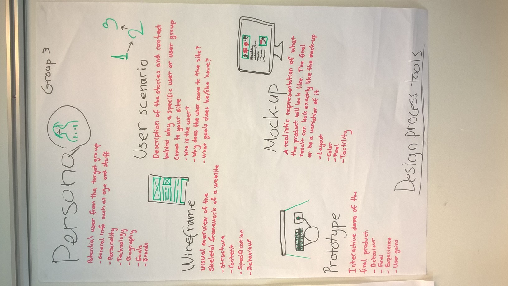
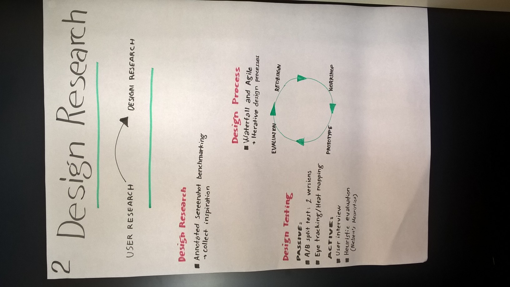

Recap
1. When would you use a horizontal prototype and when would you use a vertical prototype?
Horzontal - Flere halve funktioner, prøver at vise et basic helhedsindtryk af siden.
Vertical - Tænk Squares. Lidt mere detaljeret. Få, men færdige funktioner.
2. Why would you build a Mock-up and a wireframe? How are they different?
Wireframe - Structure, Content, Specification, Behaviour
They let you focus on the skeleton. Ingen forstyrrende detaljegrad. Skridtet efter informations arkitektur.
Mock-up - Layout, Colour, Tactility, Feel
Prototype - Behaviour, Feel, Experience, User gains
Wireframe vs. Flowchart - Wireframes fokuserer på interfacen. Flowchart focus på systemet som en helhed.
3. What are the benefits of prototyping before building the code? And what are the limitations of this?
En måde at teste brugeren interageren med produktet. (Tænk Invision). Teste UX/interactive behaviour.
Testing the flow of a use situation (case study).
“A scenario-based simulation that allows a person to experience chosen aspects of a potential product”
Design scoped går fra få elementer - til helheden.
The form går fra abstrakt til noget brugeren kan røre.
The Fidelity går fra en rå sketch til en præcis reproduktion.
4. What is an Affordance and what is a Signifier? What is the difference?
Affordance er hvad vi opfatter en ting kan bruges til. Signifiers er en måde at signalere hvad et objekt kan Skub/træk er en bevidst signifier.
De kan ligeledes være utilsigtet, som fx. at følge en sti hvor græsset er trådt ned af folk inden dig.
Affordance er hvad et objekt kan - signifieres er hvad vi opfatter det til.
En sko kan fx. åbne øl. Hvilket den ikke signifies.
5. What does Donald Norman mean when he says you have to design for Discoverability and Understanding?
Empiri Page 3
Discoverability: Hvordan fungerer det? Understanding? Hvordan fungerer den?
Discoverability: Is it possible to even figure out what actions are possible and where and how to perform them? Understanding: What does it all mean? How is the product supposed to be used? What do all the different controls and settings mean?
6. What is meaning of Mapping and Feedback In interface design?
Mapping er forholdet imellem to ting. Drej på rattet for at styre bilen.
Interfacen giver brugeren feedback omkring hans handling. Digitalt er der ingen textil feedback, så det gør det sværere.
7. What is the difference between user experience and Usability? Can you design usability and user experience?
UX er den totale oplevelse en bruger har med et produkt.
Usability er et ældre udtryk. Usability er mere pragmatisk - fokus på at udføre en handling. - UX har mere fokus på brugerens totale oplevelse samt følelser.
Usability aspekter som informations arkitektur og interfacen kan højne eller ødelægge UX.
8. What is an Interface? In what different ways can we understand interface?
En måde at levere et mål. Skabe en wrapper for brugeren.
Sortere data, og leverer relevant info.
Oversætter fra A til B. Fra bevægelse til 1 taller og 0'er..
9. What is pliability? And how is it related to user experience?
At oplevelsen fremstår flydende og modellerbar. Samt kan tilpasses min situation.
A pliable interaction is one where the user is drawn into a sense of shaping the digital information with his/her fingertips.
10. What is meant by temporal and spatial elements of user experience? What does this have to do with designing user experience?
Spatial (space) det fysiske.
Refers to the dimension of a design which you can see without abstraction. It is what can be “touched” or moved. It’s the “physical” manifestation.
Temporal (temporary). Følelsen af den totale oplevelse.
Is the dimensions of a design which evolves over time. The feel of the interaction that changes as you engage in it. The emerges of aesthetics.
11. What is meant by engagement and enchantment when talking about user experience? How can either one be “designed”.
Enchantment er en måde at fortrylle brugeren, og dermed inddrage ham. Svært at opnå med webdesign. Engagement - engagere brugeren.
12. What is fluency? And how is it related to user experience?
Fluency Empiri Side 8 nederst.
- System 1. automatisk - opfattelse af ting.
- System 2. Eftertænksom, vudere og overvejer.
System 1 opfatter noget (intuitivt), hvorefter System 2 bearbejder det.
Sammenspillet mellem de to, hvor brugeren bare bliver grebet.
Føles smukt, og lettilgængelig.
The purpose of this thesis was to show that fluency is the underlying, cognitive variable when judging beauty and usability
13. Persona. What is a user persona? How do you create one and what is the purpose of a persona?
Præsenterer en bruger, som en arketype.
Ikke videreformidling af en typisk brugere, men bruger opførsel indenfor et område.
They personify the design situation and evoking empathy.
Personas are used to build trustworthy scenarios focusing on actual people and not just what the designer thinks or what the client wants.
Personas...
... are based on research. ... represents types of users of a specific product. ... explore ranges of behaviour. ... have motivations. ... represents relevant nonusers.
Understanding goals – Goals motivate usage patters and arise from different cognitive processes. More on this later.
Personas should be typical, and believable. But not stereotypical.
Se 68 i bogen.

Use cases focus on the technical system and less on the user himself:
Use cases can be used to focuson problematic interaction with a system that you want to improve. They tend to see all users as equal and make no distinction for context or use situation.
14. What is a primary user persona and how is it different form a secondary user persona?
Side 88.
Primary er det primæare mål for designet.Kun et primary persona.
Secondary er næsten tilfreds med primary. Men har få mangler/tilføjelser. Evt. flere secondary personas.
Supplemental supplerende persona. Deres behov er opfyldte af Primary/secondary.
15. When would you build a scenario? How would you structure it, and are there different types? If so what is the difference?
Side 102 Læs Scenario
Et narrativ som et design redskab.
Goal-Directed scenarios are an iterative means of designing a product’s behavior from the standpoint of specific users (personas).
Use cases, on the other hand, are a technique based on exhaustive descriptions of the system’s functional requirements, often of a transactional nature, focusing on low-level user action and accompanying system response.

16. What is user research? Why is important to do user research and what kind of data do you collect?
For at delvist hæve designet fra subjektivt til objektivt.
17. What is user research? Why is important to do user research and what kind of data do you collect?
Side 41
Kvantitativ research kan kun besvare “hvor mange?” og “hvor meget?”. Kan hjælpe med at fastslå et behov. Men ikke hvad der skal til for at opfylde behovet.Kan hjælpe med at fastslå et marked/behov, men ikke hvad det marked mangler. Eller hvad behovet er præcist.
18. When doing user research in design; what are the major benefits and drawbacks from qualitative research?
Anvendes til at opnå indsigt af dybdegående og eksplorativ karakter. Kvalitative markedsanalyser besvarer ofte spørgsmål som ”hvad”, ”hvorfor” og ”hvordan”. Det kræver meget tid og indsamling af data er meget kompliceret ift. at man kan spørge på forskellige måder.
19. When would you use an unstructured interview? And when would you use a structured interview?
Ustruktureret interview, fremstår mere frit, og eksplorativt. Opnår generel eksplorativ indsigt
Ustruktureret interview forsøger at klarligge noget specifikt.
Ustruktureret interview: Interviewet udvikler sig under udførelsen – intervieweren spørger mere ind ift. de svar personen får. Struktureret interview: Et interview med plan for spørgsmål der følges.
20. What is a competitor analysis? Why could it be a good idea to do a competitor analysis and what kind of data does it produce
En konkurrent analyse, klarligge relevante markedstiltag. Findes det? Hvad gør andre godt?
21. Why would you use a focus group for data collection instead of an Interview?
Focus group skaber en synergy, imellem de adspurgte. En Ping/pong effekt. Der er med til at klarligge ting. Samt en fokusgruppe kan være mere kritisk, da det enkelt individ muligvis vil "please" den spørgende. En effekt der er aftagende i en gruppe.
Mere eksplorativ af natur end et interview.
22. Why would you use a field observation or participation for data collection? What is the difference between them?
Side 43.
Most people are incapable of accurately assessing their own behaviors,2 especially when these behaviors are removed from the context of people’s activities.
Field observation (Fluen på væggen). Participation (Bossen der kommer med på job)
Observation dernæst interview er bedst - observere for at opnå indsigt, dernæst spørgsmål til at klarligge hvorfor.
23. What is an A/B split test and what does it tell you about your design? Are there any similar test methods?

A/B split test, er en måde at vægte to løsning imod hinanden. To løsningsforslag, vægtet imod hinanden.
Passiv
- A/B split test
- Eye-tracking/heat maps
Aktiv
- User interviews
- Heuristic evalution
24. When would you use a questionnaire to gather information about users? What are the benefits and potential drawbacks of this method?
Billig.
Kvantitativ data. Indblik i markedet, og bruger adfærd statistisk set.
25. How can you conduct a user test in order to try out information structure, navigation and layout of your design?
Low fidelity - Trunk-test, kort sortering.
High fidelity - Heat maps, tænke høj test. Interviews
26. What is idiomatic design? And how is it different from metaphorical design? Where is it mostly used?
27. How do you use metaphors in design and why are they so controversial?
Tænk Gem/Diskette. Oprindeligt en metafor for et fysisk objekt. Nu Idiomatic, lærer fra barnsben at det betyder gem.
Forståelse på tværs af kulturer kan være forskellige.
28. What is Mobile first and what are the strengths and drawbacks of it?
Progressive enhancement. Rå prioritering af indhold. Fra mobil og op.
29. What positive benefits do you get when choosing between mobile apps that are; responsive, adaptive, native and hybrids?
LOL. Ta' den på gefühlen.
30. What is content prioritization? Why is it important and how can you structure it?
Tænk EB.dk - Når alt er prioriteret er intet prioriteret.
Baseres på user feedback. Hvad er vigtigt?
31. What is Data visualization and why do some consider data to be the new soil? Where can you use data visualisation to improve UX?
Data bliver hurtigt meget komplekst. (Tænk Excelark) Svær at forstå.
Visualisering gør det nemmere at forstå, samt udtrykke problematikker. Fortælle en historie
Et landskab brugeren kan gå på opdagelse i.
Data is the new oil: Ligesom at de lande der har meget olie er rige, vil de firmaer der har meget data, være de førende.
32. What is a communication strategy and what implications does it have for you function as a web developer in a company?
En måde at viderekommunikere en virksomheds, værdier, mission og mål.
33. What is the difference between the old and the new media sphere? Why is planning for engagement important in the new media sphere?
Monolog - Web 1.0 - Lineært.
Dialog - Web 2.0
34. What is a Wicked Problem? And what does it have to do with interface design?
A tame problem - Du ved en knap mangler? Du ved hvor, Og hvilken kode.
Wicked Problem Et tværtydigt problem. Et design er fx. en løsning på et wicked problem. Ikke et entydigt ja/nej spørgsmål.
The case is a wicked problem because the solution is not true-or-false but good-or-bad.
Involves people and social relations with different goals.
Solve them by doing research to inform choices and focus on users.
Agile development processes fit wicked problems.

35. What is HCI and from where does the concept originate? Who invented the first mouse, and what is The mother of all Demos?
Human Computer Interaction.
Doug Engelbart - The Mother of all Demos
En præsentation i 1968, af en nærmest komplet computer. Hi-res skærm, Musen, Windows, Fil deling, Beskeder, Keyboard, En fysisk genvejsknap. Knee Controller (Symaskine)
36. Why do some believe that website design is dead? What do they believe has replaced it, and Why?
https://mikejakobsen.gitbooks.io/web-development/content/interface-design/why-webdesign-is-dead.html